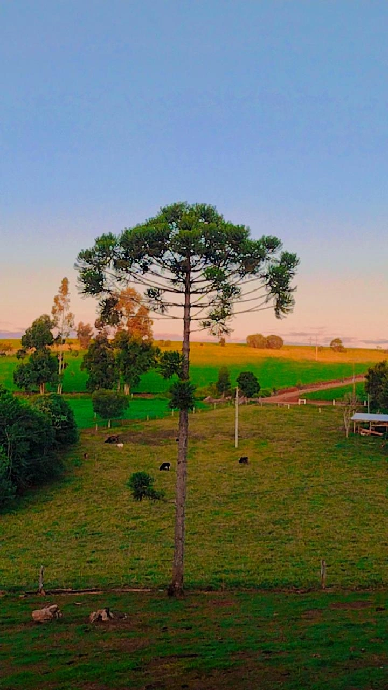
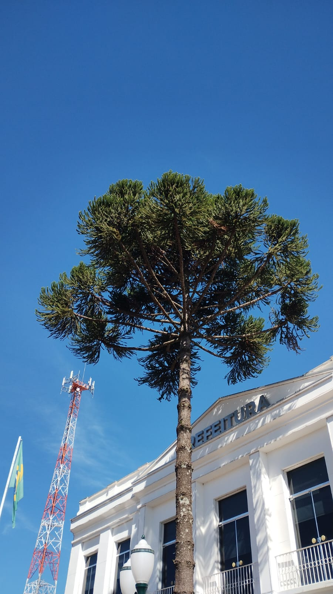

A importância dos Pinheiros
O pinheiro-do-paraná, ou Araucária angustifolia, é uma árvore símbolo do sul do Brasil, especialmente presente no Paraná. É uma espécie nativa da Mata Atlântica, conhecida por sua forma única e pelos frutos chamados pinhões, muito consumidos na região. Infelizmente, a Araucária está ameaçada de extinção devido ao desmatamento e à exploração excessiva de madeira. Sua preservação é essencial para manter o equilíbrio ambiental e proteger a biodiversidade local. Hoje, diversas iniciativas buscam recuperar áreas degradadas e incentivar o plantio consciente da espécie, valorizando sua importância ecológica e cultural para o povo paranaense.
 